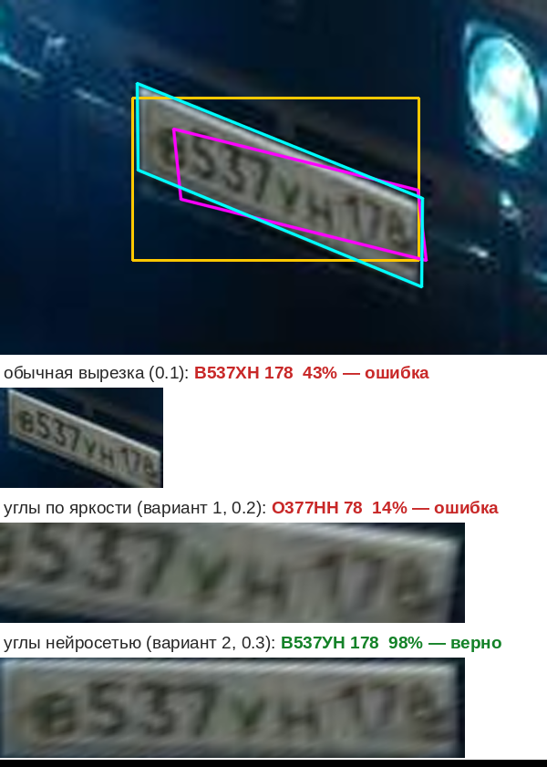

Короткое руководство: что происходит с кадром, по шагам и в каком порядке, где это лежит в коде и откуда взялись модели и данные. Отчёт (HTML-таблица) здесь не разбирается.
В коде те же шаги помечены комментариями ШАГ 1 … ШАГ 7. Найти их можно поиском. Общая схема есть в начале main.rs.
Берём кадр → нейросеть-детектор находит на нём прямоугольники с номерами → каждый номер вырезаем как есть и «выпрямленным»: находим 4 угла таблички и приводим её к ровному прямоугольнику преобразованием перспективы. Углы ищем двумя способами: по яркости (вариант 1) и маленькой нейросетью (вариант 2) → нейросеть-распознаватель читает все вырезки → из её ответа собираем номер по правилам ГОСТ (где буква, где цифра) → из всех прочтений оставляем лучшее → на видео склеиваем кадры одной машины и голосуем → пишем результат.
| файл | что внутри | шаг |
|---|---|---|
main.rs |
параметры запуска, порядок шагов (Ctx::photo, Ctx::video_once, Ctx::read_all), выбор лучшего прочтения |
1, 3, 5 |
video.rs |
кадры из видео и камер через ffmpeg | 1 |
engine.rs |
запуск нейросетей через ONNX Runtime: Detector (поиск номеров), CornerNet (углы номера), Reader (чтение) |
2, 3, 4 |
imgops.rs |
простые операции с картинкой: уменьшить, вырезать, нарисовать рамку | 2, 3 |
rectify.rs |
поиск 4 углов по яркости (вариант 1), выпрямление номера, проверка углов | 3 |
plate.rs |
форматы номеров РФ, коды регионов, сборка номера из ответа сети | 4 |
track.rs |
видео: одна машина — один номер, голосование по кадрам | 6 |
report.rs |
запись CSV/JSONL/HTML | 7 |
main.rs, load_image. Файл открывается библиотекой image. Поворот из EXIF учитывается: снимок с телефона не окажется лёжа.video.rs, Frames::open / next_frame. Запускаем ffmpeg, он декодирует любой формат и RTSP-поток и отдаёт кадры картинками в канал. Анализируется --fps кадров в секунду (по умолчанию 6). Если камера отвалилась, программа переподключается сама: Ctx::video.engine.rs, Detector::detect. Подготовка кадра лежит в imgops::letterbox_chw: кадр вписывается в квадрат 640×640 с серыми полями, так же как при обучении YOLO.x1, y1, x2, y2, уверенность. Рамки слабее --det-conf (0,3) отбрасываются.Все вырезки делаются в main.rs, Ctx::read_all.
3а. Обычная (imgops::crop) — прямоугольник детектора с запасом 2 % по ширине и 6 % по высоте. Так работала версия 0.1.
3б. Выпрямленная (rectify.rs). Приводим номер к нормализованному виду преобразованием перспективы — вот здесь:
rectify::find_corners (вариант 1, по яркости) и CornerNet::find в engine.rs (вариант 2, нейросеть), см. ниже;rectify::homography по 4 парам точек «угол на кадре → угол ровного прямоугольника» считает матрицу преобразования перспективы 3×3. Это система из 8 уравнений, решаем её методом Гаусса;rectify::warp по этой матрице вырезает табличку из исходного кадра, не из уменьшенной копии, в ровный прямоугольник 297×64. Каждая точка — среднее нескольких выборок, чтобы мелкий текст не рассыпался.Вариант 1: как find_corners находит углы. Нейросети здесь нет, всё считается по яркости внутри рамки детектора с запасом:
ink_mask, components, looks_like_char). Символ — тёмное пятно на светлом фоне. Точка считается «чернилами», если она темнее среднего по окну вокруг (адаптивный порог через интегральное изображение). Соседние такие точки собираются в пятна, и остаются только пятна размером и формой с символ. Для синих номеров полиции (светлые знаки на тёмном) то же самое повторяется наоборот.baseline). Низы символов лежат на одной прямой. Перебираем пары пятен, через каждую пару проводим прямую и считаем, сколько ещё пятен на ней лежит (метод RANSAC). Побеждает прямая с наибольшим числом символов.best_shear). При съёмке сбоку вертикали символов перестают быть перпендикулярны строке. Перебираем наклон от −40° до +40°. Правильный тот, при котором символы в сумме получаются самыми «узкими».eval/measure_layout.py), поэтому выпрямленная вырезка выглядит так же, как те, на которых учился распознаватель.eval/bias.py).sane). Четырёхугольник должен быть выпуклым, разумного размера и рядом с рамкой детектора. Если что-то не так, find_corners возвращает «не нашёл», и остаётся обычная вырезка.Вариант 1 пропускает почти квадратные рамки (двухстрочные таблички мото и некоторых прицепов): для них остаётся обычная вырезка.
Вариант 2: углы находит маленькая нейросеть (engine.rs, CornerNet::find; модель models/corners.onnx, ≈0,7 млн параметров).
rectify::net_region). Вырезаем эту область из кадра, переводим в серое и сжимаем до 192×64.rectify::sane та же, что у варианта 1: выпуклый четырёхугольник разумного размера рядом с рамкой.homography и warp.Все номера кадра проходят через сеть одной пачкой. Вместе с чтением лишней вырезки это около 20 мс на номер на 2 ядрах. Порог по форме рамки здесь мягче, чем у варианта 1: сильно наклонённый номер даёт почти квадратную рамку, а именно такие номера выпрямление спасает чаще всего.
Как сеть обучена (скрипты в eval/, порядок — в eval/README.txt):
gen_corner_ds.py, synth_lib.py). В размеченные углы вклеивается вырезка российского номера из обучающей части OCR-датасета. Потом кадр поворачивается до ±20°, смотрится сбоку (скос, сжатие, лёгкая перспектива), уменьшается до ширины номера 50–230 точек, вставляется в кадр размером с камерный, жмётся в JPEG 35–90. Плюс яркость, шум, размытие.train_corners.py). PyTorch, 30 эпох, около 25 минут на 2 ядрах процессора. Ошибка считается в точках входа 192×64. При обучении рамка ещё слегка «дрожит», меняются яркость и контраст, бывают пятна и инверсия.Почти квадратные двухстрочные таблички (мото, некоторые прицепы) — слабое место. В открытых российских данных их нет вообще, поэтому выпрямление для них не проверено. Страховка (шаг 5) здесь особенно важна.

Номер сбоку, ширина 67 точек. Жёлтая рамка — детектор, лиловый четырёхугольник — углы по яркости, голубой — углы сетью. Ниже — что получил распознаватель в каждом случае
engine.rs, Reader::read. Все вырезки кадра (обычные и оба вида выпрямленных) читаются одной пачкой. Каждая сжимается до 128×64. Сеть выдаёт 10 позиций, и для каждой — вероятности 37 знаков: 0–9, A–Z и «_» (пусто).A123BC77), а показывается кириллицей (plate::to_cyr). --find принимает и то и другое.plate.rs, decode_shaped. Брать «самый вероятный знак на каждой позиции» нельзя: сеть иногда путает О и 0, В и 8. Поэтому перебираем допустимые шаблоны номеров РФ и берём тот, у которого суммарная вероятность выше. Если по шаблону здесь буква, «0» превращается в «О». Ещё проверяется код региона: несуществующий трёхзначный регион снижает уверенность.Почему у такси, полиции и других свой формат. Это не придумано программой, так написано в ГОСТ Р 50577-2018, и так ГИБДД выдаёт номера:
| вид | пример | порядок |
|---|---|---|
| легковые, грузовые | А123ВС 77 | буква, 3 цифры, 2 буквы, регион |
| такси (жёлтые), автобусы | АВ123 77 | 2 буквы, 3 цифры, регион |
| прицепы | АВ1234 77 | 2 буквы, 4 цифры, регион |
| полиция (синие) | А1234 77 | буква, 4 цифры, регион |
| мотоциклы, военные, тракторы | 1234 АВ 77 | 4 цифры, 2 буквы, регион |
| транзитные | АВ123С 77 | 2 буквы, 3 цифры, буква, регион |
В коде шаблон записан коротко: L — буква, D — цифра, например LDDDLLDD = А123ВС77. Обычные легковые номера встречаются гораздо чаще, поэтому при сомнении выигрывают они (поле prior).
Если на объекте бывают только легковые машины, лишние виды можно выключить: --formats легковые или --formats легковые,такси. Тогда программа не будет «натягивать» на номер, например, полицейский формат.
main.rs, better. У каждого номера до трёх прочтений: обычная вырезка, выпрямленная по яркости, выпрямленная сетью. Правило простое:
Выпрямление только добавляет варианты и ничего не отнимает. Режим меняется параметром --rectify:
auto (по умолчанию) — все три вырезки;net — обычная и по сети;classic — обычная и по яркости, как в 0.2;off — только обычная, как в 0.1;on — всегда выпрямленная: по сети, а если сеть не нашла углы — по яркости.Свою модель углов можно подложить файлом models\corners.onnx рядом с программой или параметром --corners.
track.rs:
Tracker::update связывает номер на новом кадре с номером на прошлых: по перекрытию рамок, предсказанию движения и совпадению текста.vote собирает итог по всем кадрам машины. Сначала выбирается формат, набравший больше веса, потом каждый знак голосованием. Вес кадра — это уверенность × размер номера: мелкие кадры весят меньше.--gap секунд (уехала) или когда стоящая машина 4+ кадра читается уверенно (Ctx::video_once).report.rs. Пишет plates.csv для Excel и plates.jsonl. В JSONL есть рамка детектора bbox, углы corners, какая вырезка выбрана (crop_kind). Ещё там список variants: что дала каждая вырезка (номер, «сырое» прочтение raw, уверенность, подошёл ли формат, углы). По нему видно, какой способ выручает на вашей камере. Отсюда же берутся данные для дообучения, см. ниже.
| что | откуда | лицензия |
|---|---|---|
| детектор номеров YOLOv9-t | open-image-models | MIT |
| распознаватель CCT-XS | fast-plate-ocr | MIT |
| дообучение распознавателя | AUTO.RIA Numberplate OCR RU 2021-09-01, nomeroff.net.ua/datasets | CC BY 4.0 |
| сеть углов (вариант 2) | наша, обучена на AUTO.RIA Numberplate Dataset 2023-03-06 (там же): 6 000 фото из обучающей части, у номера размечены 4 угла | CC BY 4.0 (данные) |
| проверка выпрямления | тот же датасет, 800 других фото из проверочной части | CC BY 4.0 |
| обучение сети углов | PyTorch, выгрузка в ONNX | BSD |
| запуск нейросетей | ONNX Runtime (Microsoft) | MIT |
| видео и камеры | ffmpeg | LGPL/GPL, ставится отдельно |
| форматы номеров | ГОСТ Р 50577-2018 | — |
Статьи, если захочется углубиться:
Своих записей с камеры нет, поэтому проверка шла на открытых данных (скрипты и порядок действий — в папке eval/). Для проверки взяты 800 фото, которые не участвовали ни в настройке варианта 1, ни в обучении сети. В них, точно в размеченные 4 угла, вклеивались российские номера с известным текстом из тестовой части. Потом кадр поворачивался или смотрелся «сбоку», уменьшался до ширины номера 70–200 точек, вставлялся в кадр размером с камерный и пережимался в JPEG. Всего 2 400 снимков, детектор нашёл номер на 2 183.
| снимки | 0.1, обычная вырезка | 0.2, вариант 1 | 0.3, варианты 1 и 2 |
|---|---|---|---|
| номер почти прямо | 90,8 % | 94,4 % | 98,4 % |
| кадр повёрнут на 5–15° | 85,3 % | 91,0 % | 97,8 % |
| вид сбоку (скос 8–24°) | 81,4 % | 86,9 % | 97,4 % |
| всего, 2 183 номера | 86,0 % | 90,9 % | 97,9 % |
Это доля номеров, прочитанных целиком без ошибок. Ошибок стало в 6,5 раза меньше, чем в 0.1. Относительно обычной вырезки исправился 261 номер, испортился 1 (у варианта 1 — 109 и 2). С одной сетью без варианта 1 (--rectify net): 97,8 %, исправилось 258, испорчено 0.
Проверка на настоящих табличках, без вклейки. Здесь те же 800 фото с их собственными номерами, только кадр наклонялся. Это важно: обучение и первая проверка шли на вклеенных номерах, и сеть могла привыкнуть к следам вклейки.
Оговорки:
plates.jsonl у каждого номера будут углы и прочтения всех вырезок. Кадры, где выпрямленная вырезка прочитана уверенно и совпала с проверенным глазами номером, — готовая разметка. Сотня-другая таких кадров добавляется к обучающим примерам, и train_corners.py запускается ещё раз (около получаса на обычном компьютере).